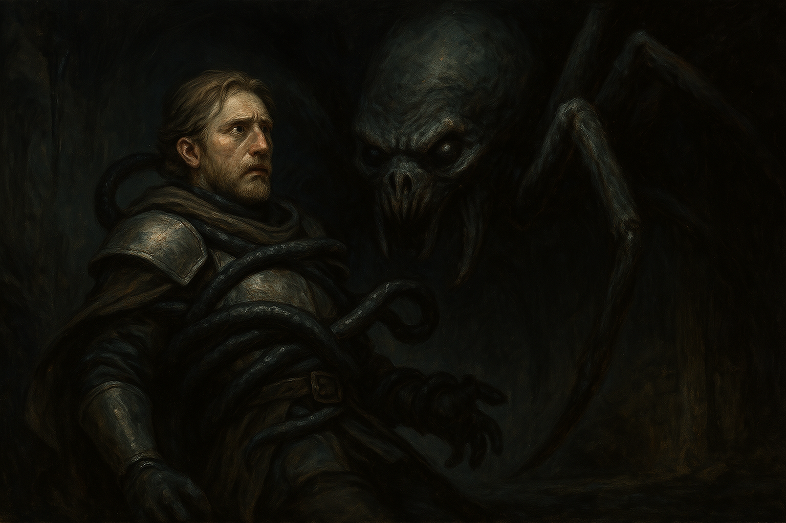

Chapter 3: Count M
The Gift from Alfenor

The Gift from Alfenor
15048.12.03
時間接近中午，冒險者們清醒後，來到了旅店一樓。Kevin 昨晚顯然沒有拿到伊寫的紙條，只有麵包可以給冒險者們吃。冒險者們拿著麵包回到二樓房間，將麵包分食給還無法移動的 Tweeter，以及剛睡醒的華生。
接著，在華生的幫助下，Paladin 向被起死回生的 Oliver 詢問，得到了一些有用的資訊：被關在王宮監獄和蜘蛛神教有關的人，叫 Marianne Jens，以及華生所知的擁王派和反王派鬥爭，和蜘蛛神教沒有直接的關係。聽到 Marianne Jens 的名字，華生想起了前一晚在 Pamela 宅邸認識的神秘貴族 Marcus Jens，而伊也意識到，Jens 正是他的雇主，M 伯爵的姓氏。
冒險者們將開始散發出一點味道的 Oliver 放回 Tweeter 的背包，毫無生命跡象的 Bernard 則用厚重的棉被蓋住，以免被 Kevin 或是其他有心人士發現。
在伊的帶領下，冒險者們來到了母親大人的寺廟。伊再三告誡冒險者們，要對母親大人恭敬，也特別提醒 Paladin 不要展現自己貴族的身份。伊輕聲推開寺廟的門，帶著冒險者們跪在母親大人的床前。華生和母親大人先感謝了前一天些除詛咒的事，便說明了來意，但他卻不小心說溜了嘴，將 Paladin 爵士的身份洩漏了出去。
母親大人先將觸手伸往 Tweeter 的身體，將他凌空抓起，接著告訴他這只是儀式的一部份，他很抱歉。母親大人的觸手將 Tweeter 整個包住，釋放開來時，Tweeter 已恢復原狀，可以正常感知也能正常移動，而且詛咒也消失了，但 Tweeter 還是感到稍微有些疲憊。
母親大人接著用觸手包住了 Sugalu 的後頸，Sugalu 感受到觸手強力的施壓，甚至還有被割出傷口，血液滲出的疼痛感，讓他差一點昏過去，但不久後母親大人便將觸手伸回，而 Sugalu 頸後的圖案也消失了。
最後，母親大人伸出了更多的觸手，伸向在暗中看不見的 Paladin，整個包住，然後騰空架起。「我說了，我討厭貴族！」母親大人發出了極度憤怒的吼叫聲。伊和冒險者們紛紛想辦法安撫與勸服母親大人，希望他不要傷害 Paladin。最終，母親大人留下了一句話「我不會殺死他的」，接著便朝著床後的空間退去，將包在觸手中，無法動彈也無法說話的 Paladin 一同拉入了虛無之中。
冒險者們趕緊跑到床頭，他們看見了和在 Bernard 家三樓母親大人床頭相似的符號。在 Tweeter 的解讀和伊的解釋下，這個符號像是一個地標，但僅僅是紀錄此地的位置。冒險者們討論著是否要賭跳進去這個床後的神秘黑洞，但華生還記得昨晚他的老鼠入洞後，便失去了和他的聯繫，讓他縮手了，於是冒險者們決定先去其他地方尋找線索。
伊提議，帶他們去見一個人，也許對他們會有些幫助，不過在那之前，要先回他的秘密基地，讓他準備一下。在伊的帶路下，冒險者們爬上了牆，又透過繩索，終於爬到了伊位於高處的藏身基地。伊先去換裝，冒險者們則在秘密基地簡單的探索，發現了一些和宗教相關的書籍，裡面對蜘蛛神教相關的內容有加以註記，Tweeter 偷偷拿走了一本書。華生也看見了一本記錄冊，裡頭出現了很多名字，但其中他發現有個他認得的名字一再出現，Marcus Jens。
伊換好裝後，從衣櫃拿了他的面具和斗篷。他發現東西似乎有被動過，但質問冒險者時，冒險者們卻紛紛表示自己沒有拿東西。他覺得這些人有點可疑。
伊帶著冒險者們從他熟悉的小路，繞到了 M 伯爵的宅邸。一座遺世的漂亮花園，沒有任何人，裡頭的別墅看起來優雅而美麗。伊披上斗篷戴上面具，讓冒險者們待在門口，自己先去找 M 伯爵告知這些訪客。在伊不在的短暫時間，華生也告誡了 Sugalu 和 Tweeter，這位 M 伯爵很有可能是他前一晚在貴族晚宴認識的 Marcus Jens，但這人似乎能看穿他的魔法，同時也出現在前一晚 Pamela 等人襲擊 Bernard 宅邸的場合，因此他對 Marcus 並不信任。
伊打開門，讓冒險者們走了進來。大家在大廳等待 M 伯爵，同時欣賞著他放置的繪畫作品。這些作品看起來製作細膩，主題抽象但又有點神秘，看不出是什麼知名畫家的作品，但要是掛了個名，肯定可以賣很高的價錢。
「嗨，露西亞小姐。」熟悉的聲音傳了過來。華生看見那人的確是前一晚才認識的 Marcus Jens，這讓他感到十分警戒。華生也向 Marcus 介紹了其他夥伴。大家坐在大廳的沙發上，Marcus 了解了大家的來意後，表示冒險者們可以信任伊，作為他的代表，跟隨著大家冒險。同時，Marcus 也吩咐傭人，請他們準備甜點和各式飲品供冒險者們享用。
Paladin 睜開雙眼。
「滴、滴、滴……」水滴下的聲音。
「噠、噠、噠……」某種腳步聲。
Paladin 轉頭，看見一隻老鼠出現在他的視線範圍內，但似乎腳步聲不是來自它。那隻老鼠直挺挺地躺著，是死是活，他不清楚。
接著是一片黑，有東西爬過了他的眼前。一張臉出現在 Paladin 的正前方，緊貼著他，逼得他動彈不得。
「你要付出什麼，來換回你的自由？」那聲音是母親大人的聲音沒錯，但母親大人此時並非以滿臉皺紋的老人面孔展現他的面貌，而是以最原始、令人類感到畏懼的蜘蛛的樣貌，緊盯著 Paladin。
Paladin 半開玩笑地伸出他印有詛咒的食指，表示可以收下這個。他也表示自己除了命一條以外，什麼都願意給。
「你的那根手指是我要的，不是給母親大人的。」熟悉的聲音從母親大人身旁傳來，是從 Sebano 消失的 Anna。一陣劇痛，Anna 已張口將 Paladin 的食指咬下，嚼了嚼，然後將指甲和骨頭吐掉。「所以你要給母親大人什麼呢？」
Paladin 試著止痛，但此時恐懼和痛覺兩者並起，Paladin 一時不知道該說什麼，便又昏了過去。
當 Paladin 再次醒來時，他看見遠處站著一名女子，那人似乎不是 Anna，因此他大聲喊叫，希望能獲救。那人趕緊靠近，Paladin 認得她，是 Roline。Roline 看見他的手，關心了一下，Paladin 這才發現斷指的部分指頭竟然被接上了一節像是昆蟲或節肢動物的指節，銜接處癢癢的，讓他感到很困惑。
Roline 催促著 Paladin 趕快逃，兩人便在地下水道奔馳。跑了好久，Paladin 沒有概念到底這個方向對不對，只能盲目跟著 Roline。中間，Roline 問了 Paladin 關於 Ron 的問題，但 Paladin 無法給予什麼有用的資訊，也只能在情緒上安撫 Roline。突然，Roline 朝他昆蟲般的指節咬了下去，然後開始狂笑，Paladin 嚇了一跳，仔細一看，才發現他眼中的「Roline」竟然是 Anna 喬裝而成的。Anna 說著，Paladin 剛剛還沒說好要給母親大人什麼。她提議，也許可以讓 Paladin 和他結婚，Paladin 貴族的身份在地面上是很好用的。Anna 嘗試用法術控制 Paladin，但 Paladin 努力對抗，沒有中招。Paladin 趕緊拔腿就跑，並隨時留意 Anna 是否跟在後頭。Anna 沒有跟上，但 Paladin 在他腦中聽見 Anna 狂笑，以及說著「來不及啦」。
好不容易找到了一處地面有開口，且地上有夠大的石頭，讓 Paladin 有機會爬上去的機會。Paladin 從地上搬了石頭，嘗試將身體撐上去，但幾度嘗試都沒能成功，且地面上似乎沒有其他人在活動，叫喊也沒用。Paladin 急中生智，從背包內拿出他的弓，將弓撐在洞口，再利用繩子綁在弓上，攀著繩子，想將身體撐上去。然而，此時他聽見洞底下熟悉的聲音。Anna 碎念著為何不願意娶她？她也年輕貌美，沒什麼壞處。Paladin 大喊他知道 Anna 上一任老公，Sebano 的鎮長是怎麼死的，他可不想落得一樣的下場。為了脫離險境，Paladin 趕緊利用法術，在地面上製造荊棘，在阻礙 Anna 的同時，也讓荊棘將地面上的石頭撐起，他便用力拉起繩子，終於將自己撐到地面上，然後趕快跑走。
地面上，Paladin 看見在自己眼前的是母親大人的寺廟，他知道非趕快離開不可，附近他比較熟悉的地方是 Gate’s Inn，於是他便跑回旅店去。旅店老闆 Kevin 看見他，表示剛剛有個自稱叫 Roline 的女生來找他，他就讓那名女子先去他們房間等待了，同時 Kevin 朝著樓上喊著 Roline 的名字。Paladin 一聽不妙，趕緊逃走。
離開舊城區，Paladin 在附近的街區想買點東西，然而他注意到附近其他人看他的眼神都有點古怪，似乎自己衣著有些破爛，身上還有些味道，在這裡十分格格不入。Paladin 先找了附近的雜貨店，想進去買點藥品，卻被店員擋在店外。Paladin 簡單描述了自己想要的藥品後，店員自己走到店內去取了藥品，還是賣給了 Paladin 三罐。Paladin 先服用了其中一罐後將另一罐塗抹在自己的傷口上，傷痛暫時緩解。同時，Paladin 注意到藥罐的蓋子底部有個眼睛的符號。
接著 Paladin 找了附近的服飾店想買衣服，門口的店員看向他身後，詢問那人是他的老婆嗎？Paladin 心頭一震，看見在他身後的竟是 Roline。他趕緊確認這名 Roline 到底是真的 Roline 還是又是 Anna 的偽裝。Roline 捏了自己的臉頰，也說了上次在王宮他們逃走後，自己花了好多時間才脫困，暫時讓 Paladin 放心了。Roline 花了錢，讓 Paladin 先買了簡單的衣服後，找了個巷子快速換裝。
Marcus Jens 的宅邸內，冒險者們和 Marcus 詢問了關於 Pamela、Bernard，以及蜘蛛神教相關的問題。Marcus 說明了 Bernard 似乎在貴族間是比較弱勢的家族，不過被殺死這件事他也是剛剛聽冒險者們的說明才知道。華生想起昨晚看見 Pamela 出現在 Bernard 宅邸前時，也看見 Marcus 出現在附近看著，讓他感到 Marcus 說的話也許不能完全相信。
Marcus 提議，和華生等人一起去王宮找國王，和國王警告關於 Pamela 可能的叛變。他提到自己和國王關係並不密切，有個貴族可以一同參與會是比較有效的做法。但華生對於這樣的提議還不太確定是否合適。
伊聽見了客廳門口有奇怪的騷動聲，示意了大家後，悄悄走向門口。大家做好準備，伊便將門打開。眾多刺客在門口試圖跑進來，Sugalu 趕緊跑到門口一一將刺客解決掉，同時華生也召喚出了兩隻殭屍，來到門口做阻擋。Tweeter 則在旁邊的窗簾後躲著。
眼看伊被刺客打了幾下，Marcus 趕緊用手上的魔法球，將伊傳送回了他身邊。同時，他請伊到樓上他的辦公桌拿「那一盒」。伊很清楚知道他的 M 伯爵在說什麼，趕緊用最快的跑速跑了上去，將一盒精緻又有點重量的盒子拿了出來，跑回一樓，遞給 Marcus。Marcus 打開盒子，裡面是個看起來做工複雜的機械，Marcus 小聲說了句「抱歉了半獸人」，接著朝著中心的按鈕按下去，門口附近的地面便落了下去，同時原本通往二樓的樓梯旁冒出了一個走向地下室的樓梯。
Sugalu 落到地下，看見他和其他刺客們以及將失落在一個像是監牢一樣的空間。在華生的協助下，殭屍們堆疊自己的身體，將 Sugalu 撐到地面。大家走到地下室，在 Marcus 的指引下，對刺客們進行拷問。Marcus 再次丟了一顆魔法球到監牢中。伊仔細看，這顆魔法球比起像水晶球一樣的硬的材質，更像軟泥一般可以塑形。接著華生和伊輪番向刺客們拷問，在 Marcus 的操控下只要刺客們有好好回答，便會被電。
他們得知這群刺客是 Pamela 派出的，Pamela 至少有快要 100 名像這樣的傭兵，他們分別會出不同的任務，昨晚 Bernard 宅邸的現場就是他們的人。在華生的詢問下，他也得知之前認識的貴族中，Malcolm Hicks 似乎也是和 Pamela 積極合作的其中一人，而 Yashin Usta 和 Wesley Vance 也被他們注意過和 Pamela 是一夥的，Quinton Leonard 則似乎沒有被聽見和 Pamela 討論。Pamela 方計畫利用 Malcolm 手下的奴隸們結合他底下的傭兵，一起攻入王宮，發動政變。
最後，Marcus 在華生的建議下，放走了兩名刺客，Joe 和 Thomas，並將其於剩下的刺客電死。